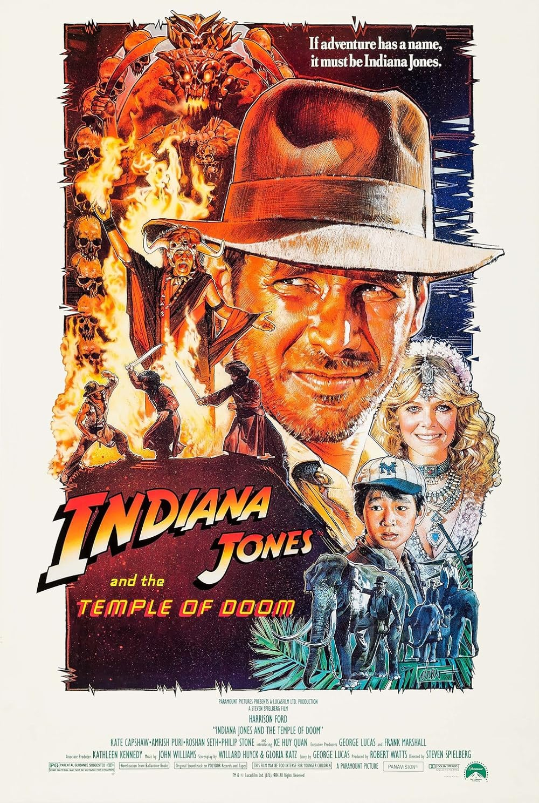

|  |
Orijinal İsmi: Indiana Jones and the Temple of Doom
Vizyon Tarihi: 23 Mayıs 1984 Süre: 118dk Tür: Macera Yönetmen: Steven Spielberg Senarist: George Lucas,Willard Huyck,Gloria Katz IMDb: 7.5 |
George Lucas ve Steven Spielberg'in çektiği bu Indiana Jones'un ikinci serisinde, Indy, küçük yardımcısı Short Round ve şımarık şarkıcı Willie Scott ile birlikte Hindistan'a gelirler. Köyün kayıp sihirli mücevherini bulmak için herşeyi riske eden bu üçlü, aynı amaç için orada bulunan şeytani bir tarikatla karşı karşıya kalırlar. Bu soluk kesici macerada, kim canlı kalabilecek?